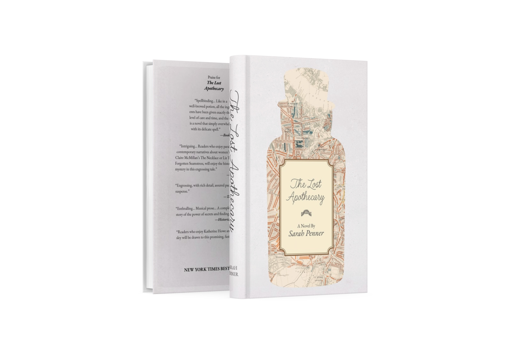

In this project, I did a re-design of the book jacket for the novel The Lost Apothecary.
After reading the story, the two main concepts I came up with for the design is Caroline's investigation of the story based on the apothecary bottle, and all the record of customers Nella keeps.
So I used the shape of an apothecary bottle on the front and back covers. On the front, I used a map of 1800s London inside the apothecary bottle to show the bottle reveals a story from 200 years ago.
I used the shapes of apothecary bottle label, script typefaces, and the parchment paper texture to give a sense of Nella's handwritten records.
I also made a few mock ups of this design.
